Аполлонія / Статті / Шлях до ультраконсервативної стоматології – відбілювання, інфільтрація, реставрація
Практичний досвід · журнал «ДентАрт» 2019 №3
Шлях до ультраконсервативної стоматології – відбілювання, інфільтрація, реставрація
THE WAY TO ULTRACONSERVATIVE DENTISTRY – BLEACHING, INFILTRATION, RESTORATION
Анна Салат, (м. Барселона, Іспанія)
На прикладі клінічного випадку буде розглянуто варіант лікування, який обрали для усунення карієсу на ранній стадії: білих плям і кількох істотніших уражень, які виникли через погану гігієну ротової порожнини. «Відбілювання і відновлення» (тобто спочатку відбілити, потім відновити) – це той порядок дій, якого ми дотримуємося як протоколу. Якщо уражені карієсом тканини розміщені дуже близько до пульпи, то спочатку виконуємо реставрацію, потім відбілювання і після цього – необхідну корекцію композитом.
Сьогодні у розпорядженні стоматологів є базовий набір мінімально інвазивних методик лікування карієсу, таких як відбілювання, інфільтрація смолою низької в’язкості після протравлювання соляною кислотою, а також мікро- і макроабразивна обробка з наступним нанесенням реставраційного матеріалу. З’ясувавши причину виникнення ураження, ми можемо отримати уявлення про його структуру і скласти відповідний план лікування.
У цьому клінічному випадку причиною ураження зубів було скупчення нальоту через недотримання адекватної гігієни ротової порожнини. Ми дотримуємося неінвазивного підходу, і нашим планом, безумовно, були передбачені відбілювання, інфільтрація смолою, і лише за відсутності інших варіантів – класичне препарування. Майже у всіх випадках лікування передніх зубів відбілювання йде першим пунктом плану.
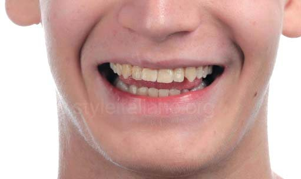
Навіть за низького розташування лінії усмішки помітні явні естетичні вади.
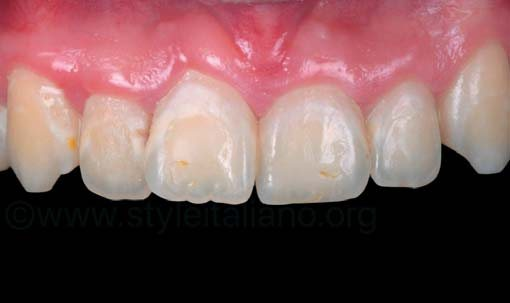
При ретракції губ можна спостерігати загострення гінгівіту, що супроводжується рясним скупченням зубного нальоту, білі і коричневі плями, залишки композиту, який використовували для фіксації брекетів, і карієс на проксимальних поверхнях. Пацієнт не закінчив ортодонтичне лікування після зняття брекетів, і тому його зуби швидко повернулися в початкове неправильне положення.
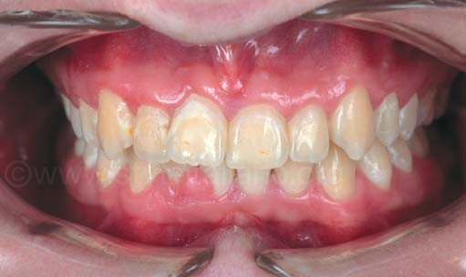
Заплановані: професійна гігієна, домашнє відбілювання, глибока інфільтрація композитною смолою і традиційне відновлення композитними пломбами – лише в тих уражених ділянках, де порушено дентин.
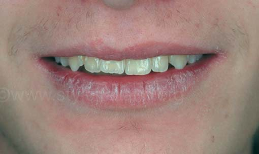
У розслабленому стані всі вади зубів майже повністю приховані.
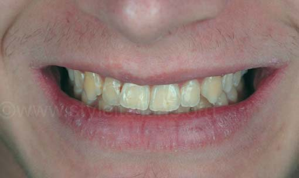
Білі плями і карієс найчастіше виникають на ділянках емалі, які оточують брекети, особливо у пришийковій зоні та зонах проксимальних контактів.
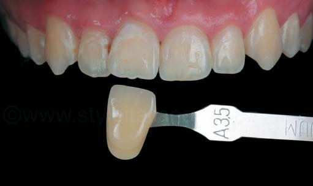
Визначення кольору зубів перед відбілюванням за шкалою відтінків Vita Classical. Спочатку колір був близьким до А3,5.
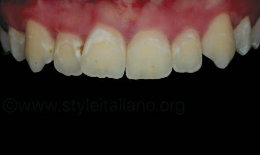
Поляризаційний фільтр особливо корисний під час планування лікування карієсу на стадії білих і коричневих плям. Оскільки відбиття світла повністю нейтралізовано, плями і їх межі видно дуже добре.
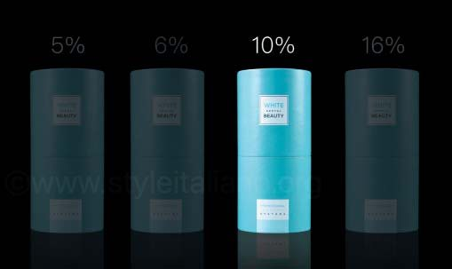
У зуботехнічній лабораторії за альгінатним відбитком була виготовлена індивідуальна м’яка капа. М’яку капу товщиною 1 мм передали пацієнтові для домашнього використання, на зуби потрібно було наносити 10% пероксид карбаміду не менше ніж на 2 години на день. Для відбілювання обрали саме пероксид карбаміду (а не пероксид водню), тому що сечовина має позитивний вплив: запобігає нальоту, карієсу і поліпшує стан ясен.
Стан через два тижні лікування за допомогою індивідуальних м’яких кап і 10% пероксиду карбаміду. Колір можна підібрати за шкалою VITA Bleachedguide 3D-MASTER®. При використанні шкали відтінків Vita Classical слід пам’ятати, що в ній не врахована логічна послідовність процедури відбілювання. Для таких випадків кольори на шкалі мають бути розташовані від найсвітлішого – до найтемнішого, як на Bleachedguide 3D-Master. Тому ми внесли зміни в протокол і для підбору кольору під час процедури відбілювання будемо користуватися Bleachedguide 3D-Master.
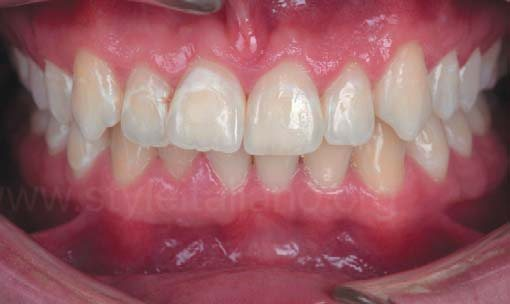
Після професійної гігієни та відбілювання пероксидами протягом двох тижнів стан ясен істотно поліпшився.
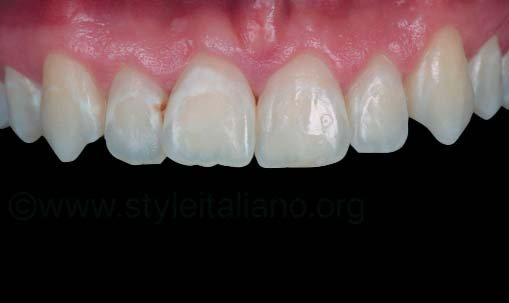
Як бачимо, поліпшився не тільки колір зубів, але й стан ясен. Білі плями все ще помітні. Після відбілювання вони не зникають, але їх структура може змінитися, ставши зручнішою для інфільтрації.
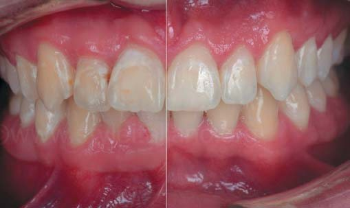
Фотографії у форматі порівняння «до і після». Фотографія, зроблена до відбілювання, – ліворуч, а після відбілювання – праворуч.
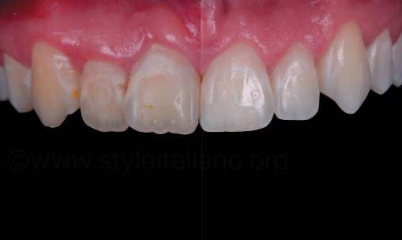
Після відбілювання білі плями все ще видно, але за рахунок зменшення контрасту з навколишніми тканинами вони стали менш помітними. Самі плями не змінилися, але зуби тепер біліші.
На цьому знімку – шприци з набору Icon. Єдиний наявний на ринку мінімально інвазивний спосіб лікування, яким можна зупинити карієсне ураження і відновити естетичний вигляд, – це інфільтрація смолою, а єдиний наявний у продажу матеріал, який відповідає цьому принципу, – це Icon (DMG, м. Гамбург, Німеччина). На сайті Styleitaliano розміщено багато статей про методику інфільтрації смолою. Ми ж покроково розглянули роботу з білими плямами з урахуванням різної етіології на прикладі цього клінічного випадку.
Техніка інфільтрації настійно рекомендується для усунення білих плям після ортодонтичного лікування. Під час роботи з білими плямами зуби слід ізолювати з урахуванням певних вимог, тому що ураження є не тільки на видимій частині зубів, але й під яснами. Потрібно встановити рабердам і забезпечити додаткову ретракцію у пришийковій зоні. Для додаткової ретракції ми використовували зубну нитку (Johnson and Johnson Reach, Waxed Dentotape). Встановивши рабердам (Nictone, 6x6 blu medium), ввели нитку максимально глибоко в зубоясенну борозну. Як і завжди, рабердам встановили між двома першими премолярами і зафіксували його двома затискувачами (W2A, Ivory).
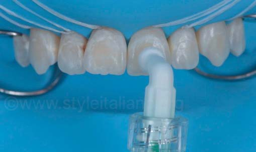
Після обробки соляною кислотою і видалення шару емалі, в якому немає пор, поверхня зуба стала проникною. Згідно з інструкцією виробника, протравлювання рекомендується виконувати 2 хвилини (Icon-Etch, DMG,).
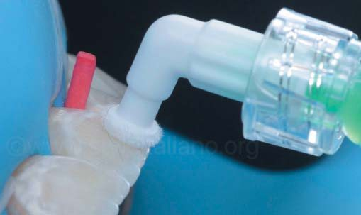
Насадкою можна рівномірно розподілити протравлювальний гель по вестибулярній поверхні.
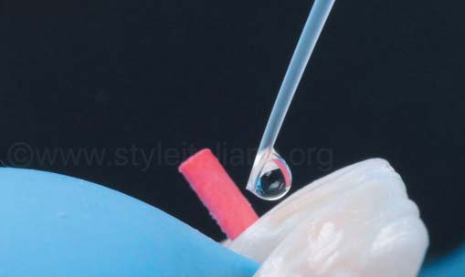
Щоб отримати уявлення про те, який вигляд матимуть зуби після інфільтрації, наносимо спиртовий розчин (Icon-Dry®, DMG). Потрібно почекати, доки спирт проникне в пористу частину емалі і заповнить усі порожнини. Протягом 2 хвилин нанесли кілька крапель спирту, щоб гарантовано заповнити всі порожнини і мати реалістичне уявлення про те, яким буде кінцевий результат.
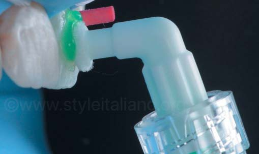
Після нанесення спирту білі плями, як і раніше, видно. Процедуру протравлювання повторили.
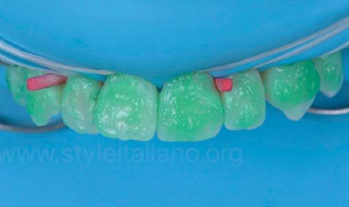
Icon-Etch на поверхні емалі. Щоразу, коли наносимо протравлювальний гель, він розчиняє тонкий шар поверхневої емалі.
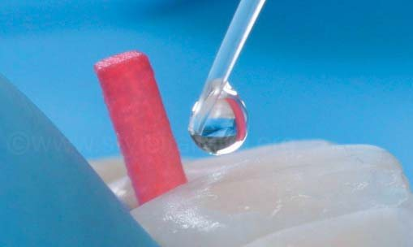
Щоб мати уявлення про результат, повторно наносимо спирт (Icon-Dry®, DMG).
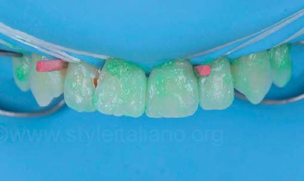
Icon-Etch нанесли втретє. Після цієї процедури середній показник загальної втрати емалі може становити 77 мкм.
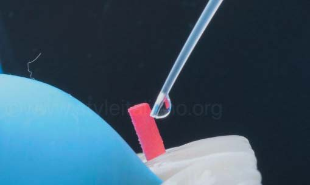
Спирт наноситься втретє (Icon-Dry®, DMG).
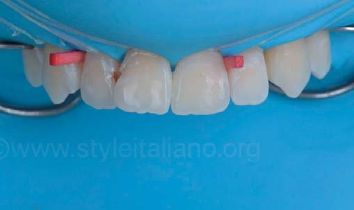
При нанесенні спирту після третього протравлювання плями були помітні набагато менше.
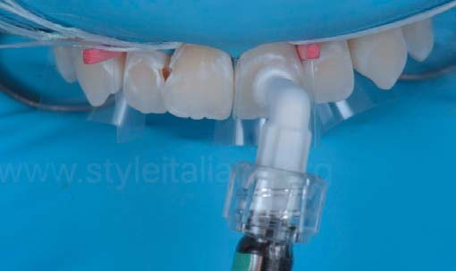
Плями все ще видно, але вигляд зубів після випаровування спирту був задовільним. Вирішивши більше не протравлювати, розпочали інфільтрацію смолою. Прокрутили поршень шприца і, нанісши гідрофобну смолу на поверхню емалі, дозволили їй проникнути у глибокі шари.
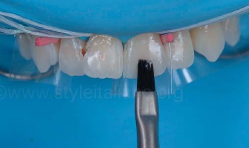
Видаляємо надлишки смоли пензликом (CompoBrush, Smile Line) і даємо їй заповнити простір між емалевими призмами.
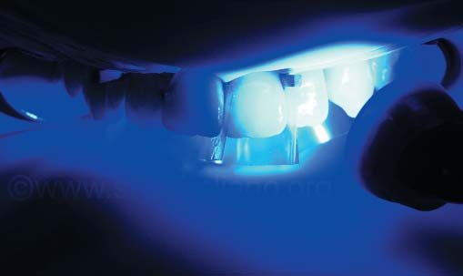
Засвічування смоли протягом не менше 40 секунд (Lampara LED deepcure S, 3M). Ми відокремили зуби один від одного прозорими матричними смужками (Kerr Hawe).
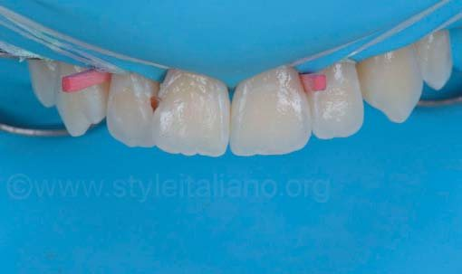
Рожеві клини (Polydentia) дуже зручні для роботи у фронтальному відділі, тому що вони дуже тонкі і маленькі.
Після видалення каріозного дентину з повітряним охолодженням, але без водного очищення уражені ділянки (кулястим карбідним бором середнього розміру на низькій швидкості). Пацієнт не скаржився на чутливість та інші проблеми, пов’язані з використанням пероксиду, незалежно від наявності карієсу на проксимальній поверхні. За його словами, після 2 тижнів обробки 10% пероксидом карбаміду по 30 хвилин на день (WDB, Optident) чутливість повністю була відсутня. Напевно, каріозний дентин був досить щільним і захистив пульпу від можливого негативного впливу пероксиду.
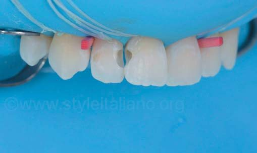
Усунуто порожнини Класу III на дистальній поверхні зуба 11 і медіальній поверхні зуба 12 новим естетичним композитом Ecosite Elements (DMG) відтінків A2 і EL у двошаровій техніці, про яку вже йшлося у статтях Styleitaliano.
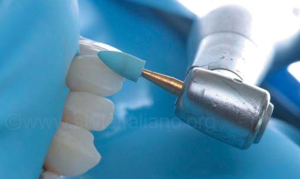
Скориставшись полірувальними насадками (HiLuster Plus, Polishing system, Kerr), видалили надлишки смоли і надали поверхні блиску. Щоб надати полімеру на дистальній поверхні зуба 11 і медіальній поверхні зуба 12 потрібний контур, використали металеві штрипси (Metal strips, GC Europe), а потім застосували фінішні штрипси (Sof-Lex, 3M) – для шліфування й полірування інтерпроксимальних зон.
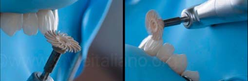
Потім відполірували насадкою Sof-Lex brown Spiral (3M). Бежева прогумована спіраль для попереднього полірування наповнена оксидом алюмінію і добре видаляє подряпини. На цьому етапі ми не доб’ємося потрібного блиску остаточно, проте підготуємо поверхню, щоб алмазними часточками надати їй максимального блиску. Щоб інструмент прослужив довше, а результат був якіснішим, рекомендується під час роботи змочувати ділянку водою.
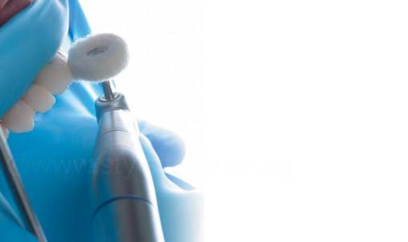
Реставрації відполірували фетровим диском Shiny F з мандрелью Shiny, Optident і полірувальною пастою з великою кількістю наповнювача (Diamond Twist SCL, Premier). Спочатку обробляли приблизно 30 с на швидкості 3000 об/хв, не змочуючи водою, а потім – з водою на високій швидкості 10000 об/хв у техніці «touch and go».
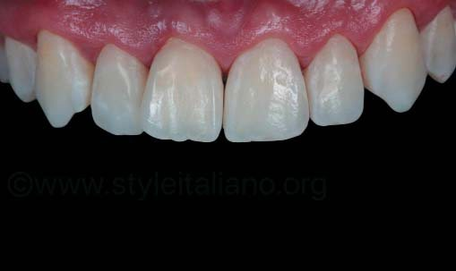
Вигляд зубів після зняття рабердаму.
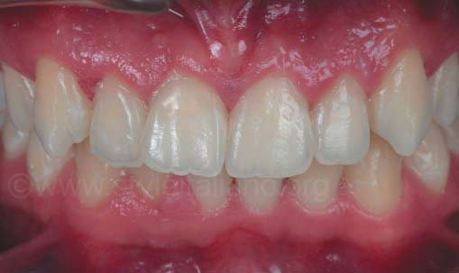
Вигляд зубів через день.
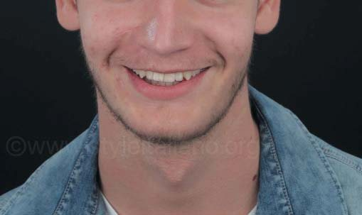
Через два місяці пацієнт з’явився на контрольний огляд і повідомив, що коли їхав на мотоциклі, потрапив в аварію, результатом якої став перелом носа і відкол частини центрального різця.
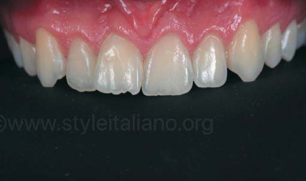
Тканини ясен уже мають набагато кращий вигляд.
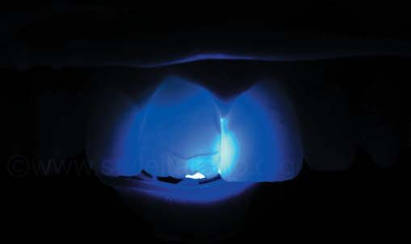
Оцінка на просвіт зуба 11 для перевірки на наявність внутрішніх тріщин.
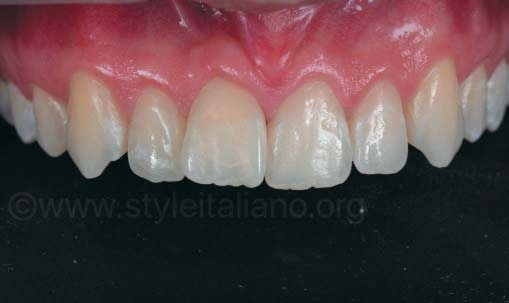
Після цього вирішили відновити ріжучий край зуба 11 у прямій техніці з використанням композиту одного відтінку (Ecosite Elements A3, DMG) під час того ж контрольного відвідування.
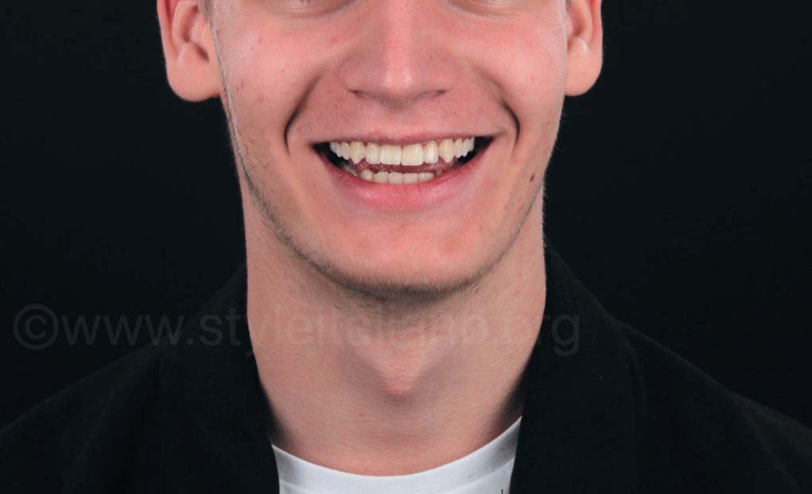
Висновки
«Відбілювання і відновлення» (тобто спочатку відбілити, потім відновити) – це той порядок дій, якого ми дотримуємося як протоколу. Навіть якщо пацієнт не дуже переживає, наскільки білі його зуби, зазвичай він довіряє такому підходу і врешті-решт дуже задоволений результатом. Коли пропонуємо цей план лікування, пацієнт зазвичай ставиться з довірою, адже білі зуби подобаються всім, навіть якщо пацієнт цього ще не усвідомив!
Завдяки знанням патологічної анатомії нам відомо, що карієс на ранній стадії можна лікувати із застосуванням техніки ерозійної інфільтрації.6 За наявності глибоких уражень ми все одно використовуємо цей же підхід: інфільтрація, видалення карієсу та заповнення матеріалом в одне відвідування.
У цьому випадку був використаний Ecosite Elements Composite (DMG, м. Гамбург, Німеччина) у техніці пошарового внесення двох відтінків (дентинового і емалевого). Цей новий композит добре підходить для лікування передніх зубів (висновок зроблено, виходячи з того, що матеріал має відповідне співвідношення світлозаломлювання та опаковості, зручний у роботі і добре полірується). При точному підборі відтінку результат дуже точно відповідає прогнозу.9,10
Офіційно оформленого правила немає, але коли, за нашими розрахунками, за наявності карієсу ми працюємо на безпечній відстані від пульпи, то спочатку відбілюємо, а потім виконуємо інфільтрацію і/або реставрацію. Якщо уражені карієсом тканини розташовані дуже близько до пульпи, то спочатку виконуємо реставрацію, потім відбілювання і після цього – необхідну корекцію композитом.
Література
Paravina RD. New shade guide for tooth whitening monitoring: visual assessment. J Prosthet Dent. 2008 Mar; 99(3): 178-84.
Atlan A, Denis M, Tirlet G, Attal JP. L’erosion-infiltration: un nouveau traitement des taches blanches de l’email. Clinic 2012 (Hors serie l’esthetique a la francaise): 23-9.
Denis M, Atlan A, Vennat E, Tirelt G, Attal JP. White defects on enamel: Diagnosis and anatomopathology: Two essential factors for proper treatment (part 1). International Orthodontics 2013; 11:139-165.
Manauta J, Salat A. Layers, An atlas of composite resin stratification. Quintessenza edizioni, 2012.
Manauta J, Salat A, Putignano A, Devoto W, Paolone G, Orsini G, Hardan L, Stratification in anterior teeth using one dentine shade and a predefined thickness of enamel: A new concept in composite layering – Part I, Tropical Dental Journal Vol. 37, n°146.
Manauta J, Salat A, Putignano A, Devoto W, Paolone G, Orsini G, Hardan L, Stratification in anterior teeth using one dentine shade and a predefined thickness of enamel: A new concept in composite layering – Part 2, Tropical Dental Journal Vol. 37, n°147.
Van B Haywood. Literature Review in Journal of the American Dental Association (1939). 2010; 141(6): 639-46.
Arnold WH, Haddad B, Schaper K, Hagemann K, Lippold C, Danesh G. Enamel surface alterations after repeated conditioning with HCl- Head Face Med. 2015; 11:32.
Manauta J, Salat A, Putignano A, Devoto W, ON/OFF – Natural Light and Live Polarization. Labline Magazine, 2013; 4 (2): 108-129.
Lazarchik D, Haywood Van B. Use of tray-applied 10% carbamide peroxide gels for improving oral health in patients with special-care needs. JADA 2010, vol.141.
![Стан через два тижні лікування за допомогою індивідуальних м’яких кап і 10% пероксиду карбаміду. Колір можна підібрати за шкалою VITA Bleachedguide 3D-MASTER®. При використанні шкали відтінків Vita Classical слід пам’ятати, що в ній не врахована логічна послідовність процедури відбілювання. Для таких випадків кольори на шкалі мають бути розташовані від найсвітлішого – до найтемнішого, як на Bleachedguide 3D-Master. Тому ми внесли зміни в протокол і для підбору кольору під час процедури відбілювання будемо користуватися Bleachedguide 3D-Master.](images/ucd19-010.jpg)
![На цьому знімку – шприци з набору Icon. Єдиний наявний на ринку мінімально інвазивний спосіб лікування, яким можна зупинити карієсне ураження і відновити естетичний вигляд, – це інфільтрація смолою, а єдиний наявний у продажу матеріал, який відповідає цьому принципу, – це Icon (DMG, м. Гамбург, Німеччина). На сайті Styleitaliano розміщено багато статей про методику інфільтрації смолою. Ми ж покроково розглянули роботу з білими плямами з урахуванням різної етіології на прикладі цього клінічного випадку.](images/ucd19-015.jpg)
![Техніка інфільтрації настійно рекомендується для усунення білих плям після ортодонтичного лікування. Під час роботи з білими плямами зуби слід ізолювати з урахуванням певних вимог, тому що ураження є не тільки на видимій частині зубів, але й під яснами. Потрібно встановити рабердам і забезпечити додаткову ретракцію у пришийковій зоні. Для додаткової ретракції ми використовували зубну нитку (Johnson and Johnson Reach, Waxed Dentotape). Встановивши рабердам (Nictone, 6x6 blu medium), ввели нитку максимально глибоко в зубоясенну борозну. Як і завжди, рабердам встановили між двома першими премолярами і зафіксували його двома затискувачами (W2A, Ivory).](images/ucd19-016.jpg)
![Після видалення каріозного дентину з повітряним охолодженням, але без водного очищення уражені ділянки (кулястим карбідним бором середнього розміру на низькій швидкості). Пацієнт не скаржився на чутливість та інші проблеми, пов’язані з використанням пероксиду, незалежно від наявності карієсу на проксимальній поверхні. За його словами, після 2 тижнів обробки 10% пероксидом карбаміду по 30 хвилин на день (WDB, Optident) чутливість повністю була відсутня. Напевно, каріозний дентин був досить щільним і захистив пульпу від можливого негативного впливу пероксиду.](images/ucd19-030.jpg)